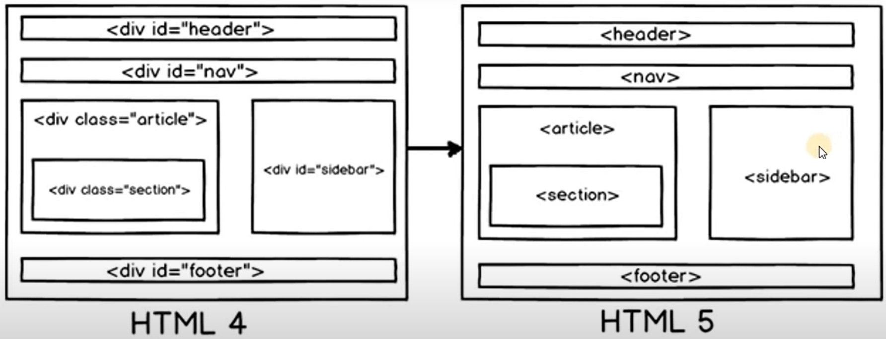

Semantic Elements
- Simantic elements are those tags which convey meaning to both browser and programmer at the same time.
Example :

- In the left half of above image, we can see every block is created using <div> tag and the only way to recognise which block servs which purpose is to see the id of each block
- In image layout it looks like this but in code its even messier, we wont be able to differenciate which <div> tag starts/ends where immidiately.
- Note : <div> & <span> are non-semantic elements [dont make sense to both programmer and browser at the same time for the cause they are being used]
- But HTML 5 presents us with Semantic elements like : <header> , <nav> , <article> , <sidebar> , etc... Which do the same job as div [i.e, provide a wrapper to other tags] but now they have meaningful names for programmer to differentiate them in the code easily.
- Some more examples of Semantic elements :
- <article>
- <aside>
- <details>
- <figcaption>
- <figure>
- <footer>
- <header>
- <main>
- <mark>
- <nav>
- <section>
- <summery>
- <time>